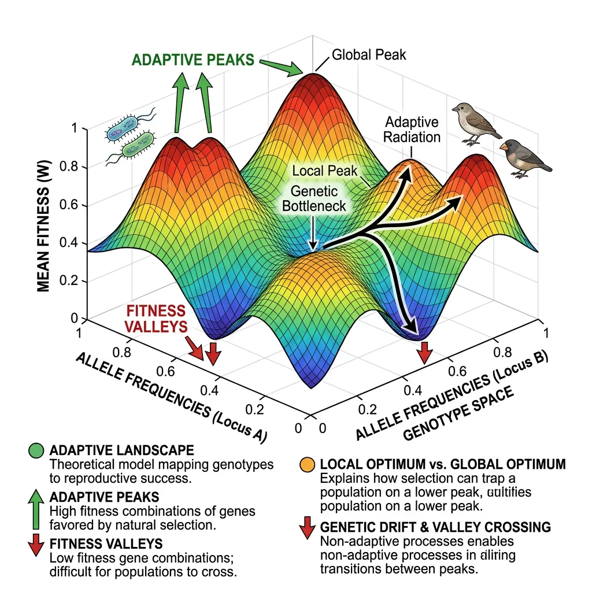
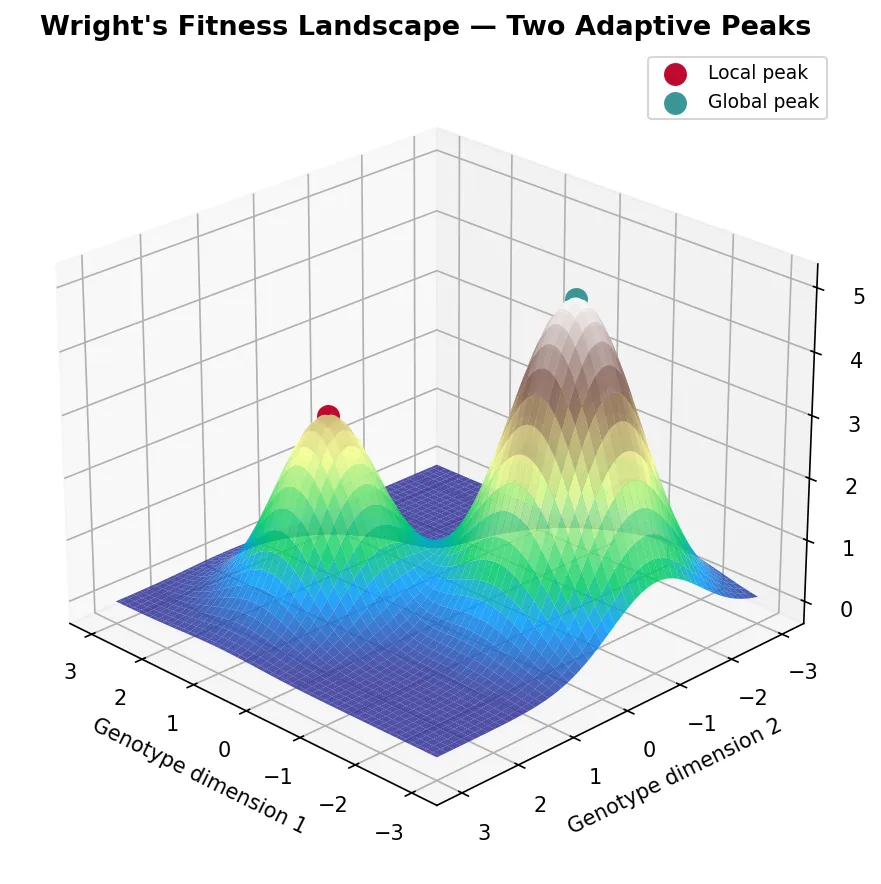
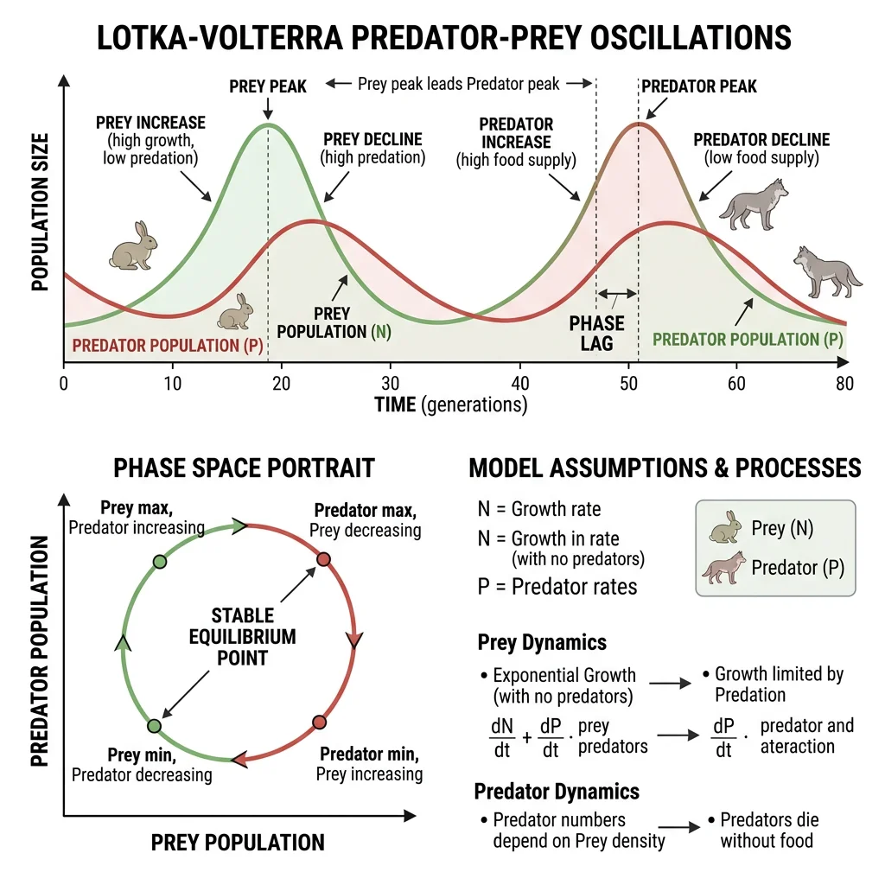
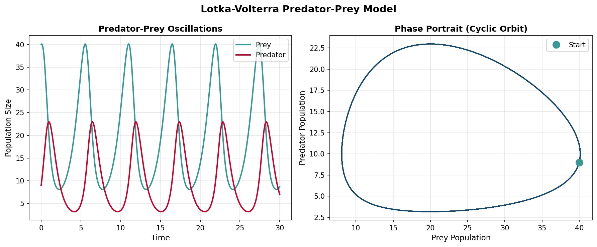
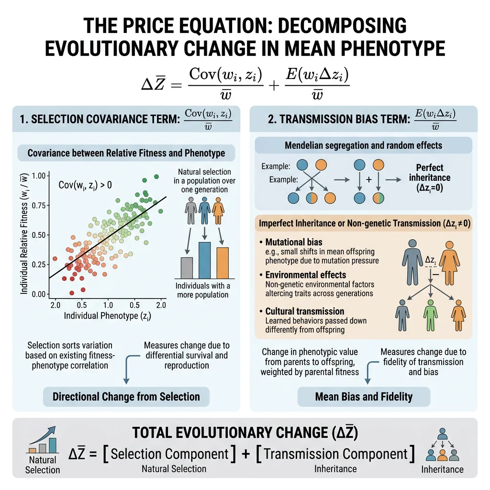
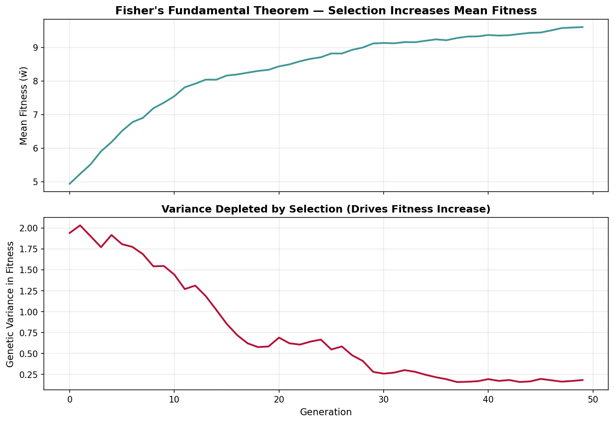
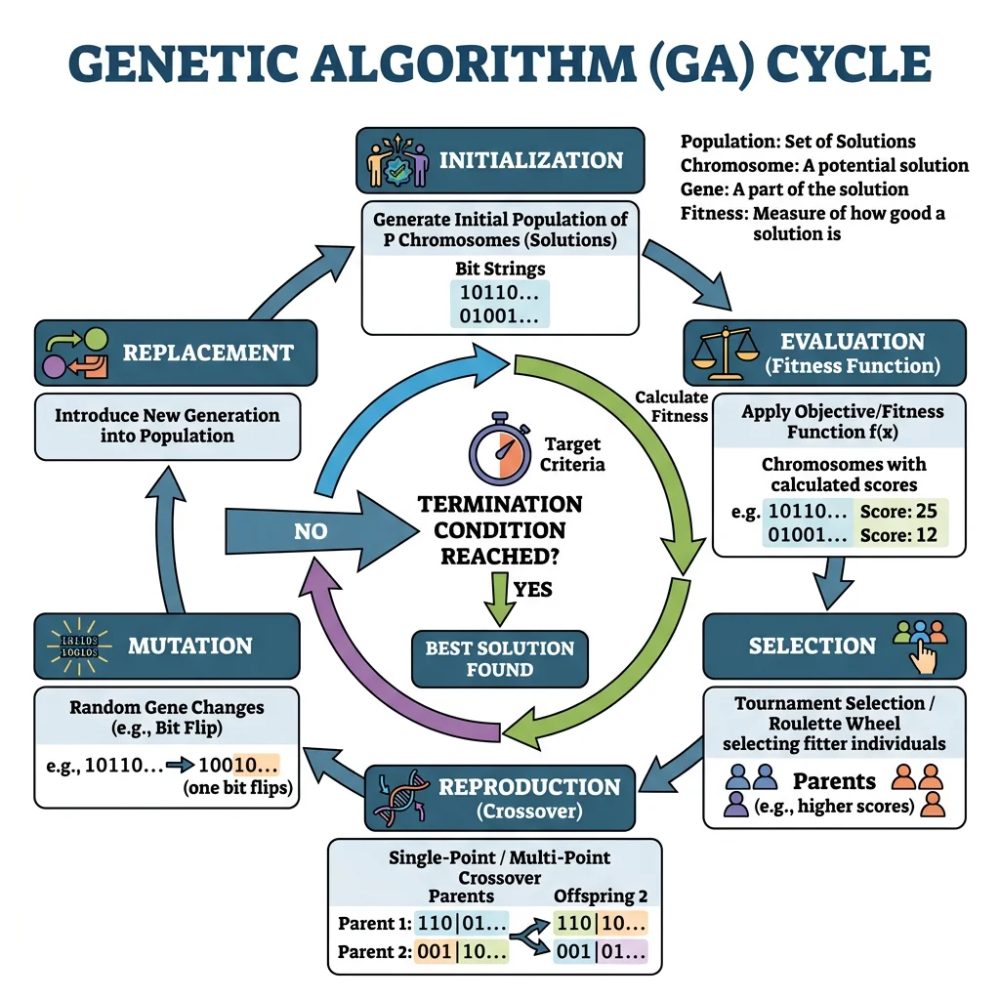
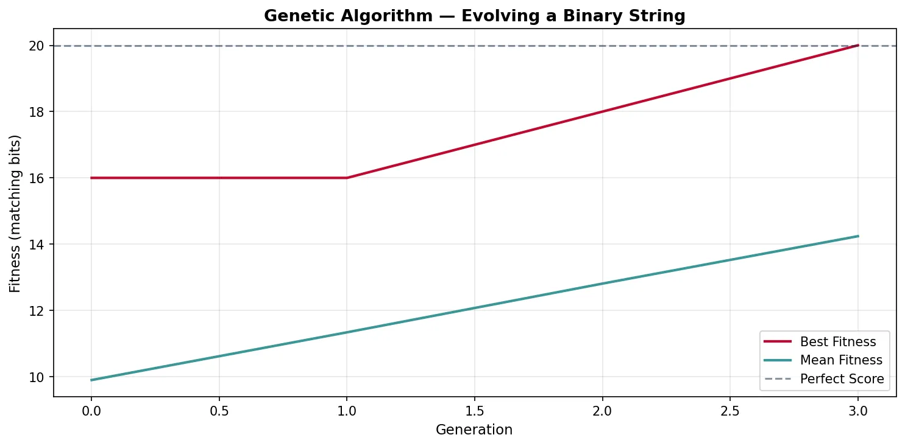
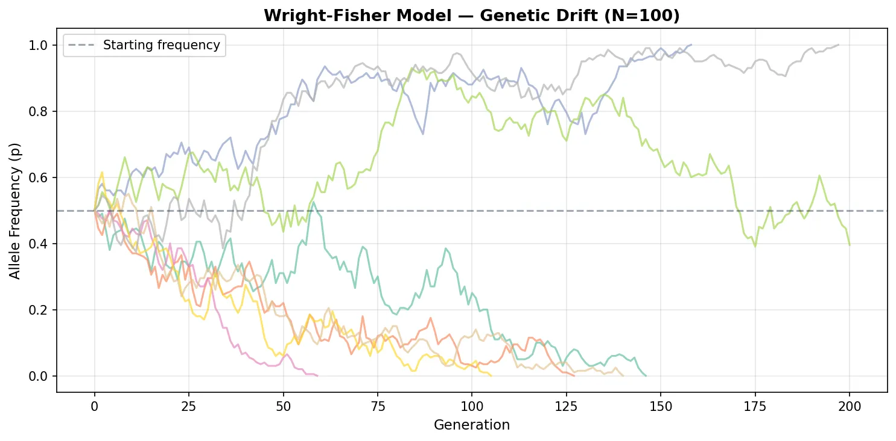

Evolutionary Biology Mastery
Darwin, Wallace & Natural Selection
Foundations, selection types, inclusive fitness, trade-offsGenetics of Evolution
DNA, population genetics, Hardy-Weinberg, molecular clocksSpeciation & Adaptive Radiation
Species concepts, reproductive isolation, rapid diversificationPhylogenetics & Taxonomy
Tree thinking, cladistics, molecular phylogenetics, classificationHuman Evolution & Migration
Hominin lineage, fossil evidence, Neanderthals, cultural evolutionCo-evolution & Symbiosis
Arms races, host-parasite, endosymbiosis, holobiontMass Extinctions & Biodiversity
Big Five extinctions, biodiversity patterns, conservationEvolutionary Developmental Biology
Hox genes, morphological innovation, heterochronyBehavioral & Social Evolution
Cooperation, game theory, sexual strategies, social insectsMathematical & Theoretical Evolution
Fitness landscapes, adaptive dynamics, ESS, selection modelsPaleontology & Fossil Interpretation
Radiometric dating, transitional fossils, taphonomyEvolutionary Genomics
Comparative genomics, gene duplication, HGT, epigeneticsFitness Landscapes
Fitness landscapes are one of the most powerful metaphors in evolutionary biology — a way to visualise how genotypes map to fitness and understand why evolution sometimes gets "stuck" at suboptimal solutions.

Wright's Landscape Metaphor
Sewall Wright (1932) introduced the concept of a fitness landscape as a topographical map where each point represents a genotype, the horizontal axes represent genetic variation, and the vertical axis represents fitness. Populations move across this landscape driven by natural selection (climbing uphill) and genetic drift (random movement).
import numpy as np
import matplotlib.pyplot as plt
from mpl_toolkits.mplot3d import Axes3D
# Create a simple fitness landscape with two peaks
x = np.linspace(-3, 3, 100)
y = np.linspace(-3, 3, 100)
X, Y = np.meshgrid(x, y)
# Two Gaussian peaks of different heights
Z = 3 * np.exp(-((X - 1)**2 + (Y - 1)**2)) + \
5 * np.exp(-((X + 1.5)**2 + (Y + 1)**2) / 1.5)
fig = plt.figure(figsize=(10, 6))
ax = fig.add_subplot(111, projection='3d')
surf = ax.plot_surface(X, Y, Z, cmap='terrain', alpha=0.85, edgecolor='none')
# Mark the peaks
ax.scatter([1], [1], [3], color='#BF092F', s=100, zorder=5, label='Local peak')
ax.scatter([-1.5], [-1], [5], color='#3B9797', s=100, zorder=5, label='Global peak')
ax.set_xlabel('Genotype dimension 1')
ax.set_ylabel('Genotype dimension 2')
ax.set_zlabel('Fitness')
ax.set_title("Wright's Fitness Landscape — Two Adaptive Peaks",
fontsize=13, fontweight='bold')
ax.legend(fontsize=9)
ax.view_init(elev=25, azim=135)
plt.tight_layout()
plt.show()

Adaptive Peaks & Valleys
Adaptive peaks are genotype combinations with locally maximal fitness — natural selection pushes populations toward them. Fitness valleys are low-fitness regions that separate peaks. The key insight is that selection alone cannot cross a valley — to reach a higher peak, a population must temporarily become less fit.
| Process | Role in Landscape Navigation | When Important |
|---|---|---|
| Natural Selection | Hill-climbing — always moves population uphill toward nearest peak | Large populations; strong selection |
| Genetic Drift | Random wandering — can carry population across valleys to new peaks | Small populations; weak selection |
| Mutation | Creates new nearby genotypes to "explore" local landscape | Always; rate determines exploration speed |
| Recombination | Creates long-distance jumps across landscape by combining alleles from different parents | Sexual populations; high-dimensional landscapes |
| Migration | Introduces genotypes from other positions on the landscape | Structured populations with gene flow |
The Problem of Local Optima — Wright's Shifting Balance Theory
Wright recognised that large, panmictic (randomly mating) populations get trapped on local adaptive peaks because selection resists any downhill movement. His Shifting Balance Theory proposed a three-phase solution: (1) Random drift in small sub-populations carries them across fitness valleys; (2) Mass selection pushes sub-populations up new, potentially higher peaks; (3) Interdeme selection — sub-populations on higher peaks grow faster and export migrants, spreading superior genotypes. While the theory remains debated (many biologists find it unrealistic for most species), it highlights the fundamental tension between selection (which optimises locally) and exploration (which requires escaping local optima).
Neutral Networks
Neutral networks (Schuster et al., 1994) are sets of genotypes with identical fitness connected by single mutations. Rather than isolated peaks, much of the fitness landscape may be a connected plateau of equally fit genotypes. A population can drift along neutral networks, exploring genotype space without crossing fitness valleys, and eventually encounter new adaptive peaks from a different starting position.
Population Dynamics Models
Mathematical models of population dynamics describe how species interact over time. These models are essential for understanding competition, predation, and the maintenance of biodiversity — providing precise, testable predictions about ecological and evolutionary outcomes.

Lotka-Volterra Competition
The Lotka-Volterra competition equations model two species competing for shared resources. Each species has a carrying capacity (K) and an intrinsic growth rate (r). The competition coefficients (α, β) measure how strongly each species affects the other:
dN₁/dt = r₁N₁(K₁ − N₁ − α₁₂N₂) / K₁
dN₂/dt = r₂N₂(K₂ − N₂ − α₂₁N₁) / K₂
Where N₁, N₂ = population sizes; K₁, K₂ = carrying capacities; α₁₂ = effect of species 2 on species 1; α₂₁ = effect of species 1 on species 2. Coexistence is stable only when interspecific competition is weaker than intraspecific competition — each species limits itself more than the other species does.
Predator-Prey Dynamics
The Lotka-Volterra predator-prey model produces the classic oscillatory cycles observed in nature — predator and prey populations cycle endlessly, with predators lagging behind prey:
import numpy as np
import matplotlib.pyplot as plt
from scipy.integrate import odeint
# Lotka-Volterra predator-prey model
def lotka_volterra(state, t, alpha, beta, delta, gamma):
prey, predator = state
dprey = alpha * prey - beta * prey * predator
dpredator = delta * prey * predator - gamma * predator
return [dprey, dpredator]
# Parameters
alpha = 1.0 # Prey birth rate
beta = 0.1 # Predation rate
delta = 0.075 # Predator growth from eating prey
gamma = 1.5 # Predator death rate
# Initial conditions and time
state0 = [40, 9]
t = np.linspace(0, 30, 1000)
# Solve ODEs
solution = odeint(lotka_volterra, state0, t, args=(alpha, beta, delta, gamma))
prey, predator = solution.T
fig, (ax1, ax2) = plt.subplots(1, 2, figsize=(12, 5))
# Time series
ax1.plot(t, prey, color='#3B9797', linewidth=2, label='Prey')
ax1.plot(t, predator, color='#BF092F', linewidth=2, label='Predator')
ax1.set_xlabel('Time', fontsize=11)
ax1.set_ylabel('Population Size', fontsize=11)
ax1.set_title('Predator-Prey Oscillations', fontweight='bold')
ax1.legend(fontsize=10)
ax1.grid(alpha=0.3)
# Phase portrait
ax2.plot(prey, predator, color='#16476A', linewidth=1.5)
ax2.plot(prey[0], predator[0], 'o', color='#3B9797', markersize=10, label='Start')
ax2.set_xlabel('Prey Population', fontsize=11)
ax2.set_ylabel('Predator Population', fontsize=11)
ax2.set_title('Phase Portrait (Cyclic Orbit)', fontweight='bold')
ax2.legend(fontsize=10)
ax2.grid(alpha=0.3)
plt.suptitle('Lotka-Volterra Predator-Prey Model', fontsize=14, fontweight='bold')
plt.tight_layout()
plt.show()

Snowshoe Hare & Canadian Lynx — Real-World Predator-Prey Cycles
The Hudson's Bay Company meticulously recorded fur trapping data for nearly a century. The records revealed clear 8-11 year oscillation cycles in snowshoe hare and Canadian lynx populations — hare numbers peak first, followed by lynx numbers approximately 1-2 years later. When hare numbers crash (due to overgrazing and predation), lynx populations crash shortly after (due to starvation). The cycle then resets as hare populations recover in the absence of predators. While the real system includes additional factors (food availability, disease, other predators), the fundamental Lotka-Volterra oscillatory pattern is strikingly apparent in the data.
Frequency-Dependent Selection
Frequency-dependent selection occurs when the fitness of a phenotype depends on how common it is in the population. This is one of the most important mechanisms maintaining genetic diversity:
- Negative frequency-dependent selection — rare phenotypes have higher fitness (e.g., rare prey colour morphs are overlooked by predators who form "search images" for common prey). This maintains polymorphism because any type that becomes rare gains an advantage
- Positive frequency-dependent selection — common phenotypes have higher fitness (e.g., warning coloration in toxic species — predators learn to avoid common patterns). This drives uniformity and can lead to fixation
- Apostatic selection — a form of negative FDS where predators disproportionately attack common prey morphs, preventing any single morph from dominating
Selection Models
Selection models formalise how traits change across generations. These equations are the mathematical backbone of evolutionary theory, providing exact predictions about the direction and rate of evolutionary change.

The Price Equation
George Price (1970) derived a single equation that captures all evolutionary change — regardless of the mechanism (selection, drift, mutation, or migration). The Price Equation is the most general statement of evolution by natural selection:
w̄ = mean fitness of the population
Δz̄ = change in mean trait value across one generation
Cov(wᵢ, zᵢ) = covariance between individual fitness and trait value → the selection term (traits correlated with fitness change in frequency)
E(wᵢΔzᵢ) = expected value of within-individual change → the transmission bias term (accounts for mutation, recombination, developmental effects)
The beauty of the Price Equation is its universality: it describes selection at any level (gene, individual, group) without assumptions about genetics, inheritance, or population structure. Hamilton's Rule, Fisher's theorem, and multilevel selection theory can all be derived as special cases.
Fisher's Fundamental Theorem
R.A. Fisher (1930) stated what he called "the fundamental theorem of natural selection": The rate of increase in the mean fitness of a population equals the additive genetic variance in fitness.
- Δw̄ = VA(w) / w̄ — the change in mean fitness per generation equals the additive genetic variance in fitness divided by mean fitness
- This theorem implies that natural selection always increases mean fitness (because variance is always ≥ 0)
- However, the environment also changes (including the selective effects of other evolving species), so overall fitness may not increase — hence "partial" in modern interpretations
- Fisher's theorem links directly to the Price Equation: the selection covariance term reduces to additive genetic variance under certain assumptions
George Price — The Altruist Who Solved Altruism
George Price was an American chemist with no formal training in biology who independently re-derived Hamilton's Rule and then went further, developing the Price Equation — the most general mathematical description of evolutionary change. Price showed that Hamilton's kin selection and Wynne-Edwards' group selection were both special cases of the same covariance equation applied at different levels. Tragically, Price's deep engagement with the mathematics of altruism led him to take his own conclusions literally — he gave away his possessions and died in poverty in London in 1975. His equation remains the most powerful and general tool in evolutionary theory, used to derive nearly every major result in the field.
Adaptive Dynamics
Adaptive dynamics is a mathematical framework for studying long-term evolutionary change by tracking the invasion fitness of rare mutants in a resident population. Key concepts include:
- Pairwise Invasibility Plots (PIPs) — graphs showing which mutant strategies can invade which resident strategies
- Evolutionary Singular Strategies — points where the selection gradient is zero; can be attractors (convergence stable) or repellors
- Evolutionary Branching — a singular point that is convergence stable but NOT evolutionarily stable, causing the population to split into two distinct phenotypes — a model for sympatric speciation
import numpy as np
import matplotlib.pyplot as plt
# Fisher's Fundamental Theorem: fitness increase over generations
np.random.seed(42)
generations = 50
pop_size = 200
# Start with variable fitness in population
fitness = np.random.normal(loc=5.0, scale=1.5, size=pop_size)
mean_fitness_history = []
var_fitness_history = []
for gen in range(generations):
mean_w = np.mean(fitness)
var_w = np.var(fitness)
mean_fitness_history.append(mean_w)
var_fitness_history.append(var_w)
# Selection: individuals reproduce proportional to fitness
probs = fitness / fitness.sum()
selected = np.random.choice(pop_size, size=pop_size, replace=True, p=probs)
fitness = fitness[selected] + np.random.normal(0, 0.1, pop_size) # Small mutation
fig, (ax1, ax2) = plt.subplots(2, 1, figsize=(10, 7), sharex=True)
ax1.plot(mean_fitness_history, color='#3B9797', linewidth=2)
ax1.set_ylabel('Mean Fitness (w̄)', fontsize=11)
ax1.set_title("Fisher's Fundamental Theorem — Selection Increases Mean Fitness",
fontsize=13, fontweight='bold')
ax1.grid(alpha=0.3)
ax2.plot(var_fitness_history, color='#BF092F', linewidth=2)
ax2.set_xlabel('Generation', fontsize=11)
ax2.set_ylabel('Genetic Variance in Fitness', fontsize=11)
ax2.set_title('Variance Depleted by Selection (Drives Fitness Increase)',
fontsize=12, fontweight='bold')
ax2.grid(alpha=0.3)
plt.tight_layout()
plt.show()

Computational Evolution
Computers allow us to run evolutionary experiments that would take millions of years in nature. Computational evolution applies evolutionary principles both to understand biology (simulation) and to solve engineering problems (optimisation).

Evolutionary Algorithms
Evolutionary algorithms (EAs) borrow natural selection's logic to search vast solution spaces. The core cycle is:
| Step | Biological Analogy | Computational Action |
|---|---|---|
| 1. Initialise | Origin of a population | Random set of candidate solutions |
| 2. Evaluate | Survival & reproduction | Calculate fitness function for each individual |
| 3. Select | Natural selection | Tournament, roulette-wheel, or rank-based selection |
| 4. Crossover | Sexual recombination | Combine parts of two parents into offspring |
| 5. Mutate | Random mutations | Small random perturbations to offspring |
| 6. Replace | Generational turnover | New population replaces old; repeat from step 2 |
NASA's Evolved Antenna — ST5 Mission
The Space Technology 5 mission used a genetic algorithm to design an antenna that no human engineer would have conceived. An initial population of random wire shapes was evaluated by electromagnetic simulation, selected for signal gain, crossed over, and mutated across hundreds of generations. The result was a bizarre, branching antenna that outperformed hand-designed alternatives while being smaller and lighter. This remains one of the most celebrated examples of evolutionary computation producing genuinely novel engineering solutions — proof that selection without foresight can outperform intelligent design.
import numpy as np
import matplotlib.pyplot as plt
# Simple Genetic Algorithm — evolve a binary string toward a target
np.random.seed(42)
target = np.array([1, 0, 1, 1, 0, 1, 0, 0, 1, 1, 0, 1, 1, 0, 1, 0, 1, 1, 0, 0])
gene_length = len(target)
pop_size = 100
mutation_rate = 0.02
generations = 80
# Initialise random population
population = np.random.randint(0, 2, size=(pop_size, gene_length))
best_fitness_history = []
mean_fitness_history = []
for gen in range(generations):
# Fitness = number of matching bits
fitness = np.sum(population == target, axis=1)
best_fitness_history.append(np.max(fitness))
mean_fitness_history.append(np.mean(fitness))
if np.max(fitness) == gene_length:
break # Perfect solution found
# Tournament selection (k=3)
new_pop = []
for _ in range(pop_size):
candidates = np.random.choice(pop_size, size=3, replace=False)
winner = candidates[np.argmax(fitness[candidates])]
new_pop.append(population[winner].copy())
# Single-point crossover
for i in range(0, pop_size - 1, 2):
point = np.random.randint(1, gene_length)
new_pop[i][point:], new_pop[i+1][point:] = (
new_pop[i+1][point:].copy(), new_pop[i][point:].copy())
# Mutation
for ind in new_pop:
for j in range(gene_length):
if np.random.random() < mutation_rate:
ind[j] = 1 - ind[j]
population = np.array(new_pop)
fig, ax = plt.subplots(figsize=(10, 5))
ax.plot(best_fitness_history, color='#BF092F', linewidth=2, label='Best Fitness')
ax.plot(mean_fitness_history, color='#3B9797', linewidth=2, label='Mean Fitness')
ax.axhline(y=gene_length, color='#132440', linestyle='--', alpha=0.5, label='Perfect Score')
ax.set_xlabel('Generation', fontsize=11)
ax.set_ylabel('Fitness (matching bits)', fontsize=11)
ax.set_title('Genetic Algorithm — Evolving a Binary String', fontsize=13, fontweight='bold')
ax.legend()
ax.grid(alpha=0.3)
plt.tight_layout()
plt.show()

Agent-Based Models
Agent-based models (ABMs) simulate individual organisms with their own genotypes, positions, and behaviours. Unlike equation-based models (which track population-level averages), ABMs capture the emergent complexity that arises from local interactions:
- Spatial structure — individuals interact with neighbours, not the entire population; this promotes cooperation and maintains diversity
- Stochastic events — random birth, death, and mutation create realistic population fluctuations
- Phenotypic heterogeneity — every individual is different; no assumption of a "representative agent"
- Emergent speciation — reproductive isolation can arise spontaneously from spatial separation or assortative mating
Simulation Approaches
Population geneticists rely on canonical simulation models that capture different assumptions about how populations reproduce:
| Model | Key Assumption | Population Size | Best For |
|---|---|---|---|
| Wright-Fisher | Non-overlapping generations; all reproduce simultaneously | Fixed N | Drift, coalescence, allele frequency change |
| Moran Process | Overlapping generations; one birth + one death per step | Fixed N | Fixation probabilities, invasion dynamics |
| Coalescent | Traces lineages backward in time to their common ancestor | Variable | Inferring population history from genetic data |
| Individual-Based | Explicit genotypes, phenotypes, and spatial positions | Variable | Ecology-evolution feedback, speciation |
import numpy as np
import matplotlib.pyplot as plt
# Wright-Fisher model: genetic drift simulation
np.random.seed(42)
N = 100 # Population size (diploid: 2N alleles)
num_alleles = 2 * N
p0 = 0.5 # Initial frequency of allele A
num_replicates = 8
generations = 200
fig, ax = plt.subplots(figsize=(10, 5))
colors = plt.cm.Set2(np.linspace(0, 1, num_replicates))
for rep in range(num_replicates):
freq = [p0]
p = p0
for gen in range(generations):
# Binomial sampling: next generation's allele count
count_A = np.random.binomial(num_alleles, p)
p = count_A / num_alleles
freq.append(p)
if p == 0.0 or p == 1.0:
break # Allele fixed or lost
ax.plot(range(len(freq)), freq, color=colors[rep], alpha=0.7, linewidth=1.5)
ax.axhline(y=0.5, color='#132440', linestyle='--', alpha=0.4, label='Starting frequency')
ax.set_xlabel('Generation', fontsize=11)
ax.set_ylabel('Allele Frequency (p)', fontsize=11)
ax.set_title(f'Wright-Fisher Model — Genetic Drift (N={N})',
fontsize=13, fontweight='bold')
ax.set_ylim(-0.05, 1.05)
ax.legend()
ax.grid(alpha=0.3)
plt.tight_layout()
plt.show()

Exercises
Exercise 1: Price Equation Application
A population of beetles has two phenotypes: large (trait value z = 8, fitness w = 3) and small (z = 2, fitness w = 1). There are equal numbers of each type. Calculate Cov(w, z) and predict the direction of evolution. Assume no transmission bias.
Show Answer
Mean fitness: w̄ = (3 + 1) / 2 = 2. Mean trait: z̄ = (8 + 2) / 2 = 5. Cov(w, z) = E(wz) − E(w)E(z) = [(3×8 + 1×2) / 2] − (2)(5) = 13 − 10 = 3. Since Cov(w, z) is positive and E(wΔz) = 0 (no transmission bias): Δz̄ = 3 / 2 = 1.5. The mean trait value will increase — evolution favours larger beetles.
Exercise 2: Fisher's Theorem Prediction
Population A has additive genetic variance in fitness VA(w) = 0.8 and mean fitness w̄ = 4.0. Population B has VA(w) = 0.2 and w̄ = 4.0. Which population will show faster adaptation? What happens to VA over time under pure selection?
Show Answer
By Fisher's Fundamental Theorem, Δw̄ = VA(w) / w̄. Pop A: Δw̄ = 0.8 / 4.0 = 0.20 per generation. Pop B: Δw̄ = 0.2 / 4.0 = 0.05 per generation. Population A adapts 4× faster. Over time, selection depletes additive genetic variance (favoured alleles fix, disfavoured alleles are eliminated), so VA decreases toward zero — which is why adaptation slows and eventually stalls without new mutation.
Exercise 3: Wright-Fisher Drift
In a Wright-Fisher model with N = 50 diploid individuals (100 alleles), an allele starts at frequency p = 0.3. What is the probability it eventually fixes? How would this change at N = 5000?
Show Answer
Under neutrality in the Wright-Fisher model, the fixation probability equals the starting frequency: P(fix) = p = 0.30 (30%). This is the same regardless of population size — in both N = 50 and N = 5000, a neutral allele at 30% has a 30% chance of fixing. However, the time to fixation differs dramatically: expected fixation time ≈ −4N × p × ln(p) ≈ −4(50)(0.3)(ln 0.3) ≈ 72 generations for N=50, versus ≈ 7,200 generations for N=5000. Larger populations take longer because drift is weaker (variance ∝ 1/2N).
Mathematical Evolution Worksheet
Use this worksheet to document your exploration of mathematical and computational evolution models. Download as Word, Excel, or PDF.
Mathematical Evolution Analysis
Record your analysis of evolutionary models and simulations. Download as Word, Excel, or PDF.
Conclusion & Next Steps
Mathematical and computational approaches transform evolutionary biology from a descriptive science into a predictive one. Fitness landscapes reveal why populations get trapped at local optima. The Price Equation and Fisher's Fundamental Theorem provide exact descriptions of how selection changes trait values. Population dynamics models explain the cycles and coexistence patterns we observe in nature. And computational tools — from genetic algorithms to agent-based simulations — let us run experiments on timescales impossible in the laboratory.
These mathematical foundations are not just academic exercises — they underpin modern applications from drug resistance prediction to conservation genetics to machine learning. Every evolutionary biologist today must speak the language of equations and simulations.